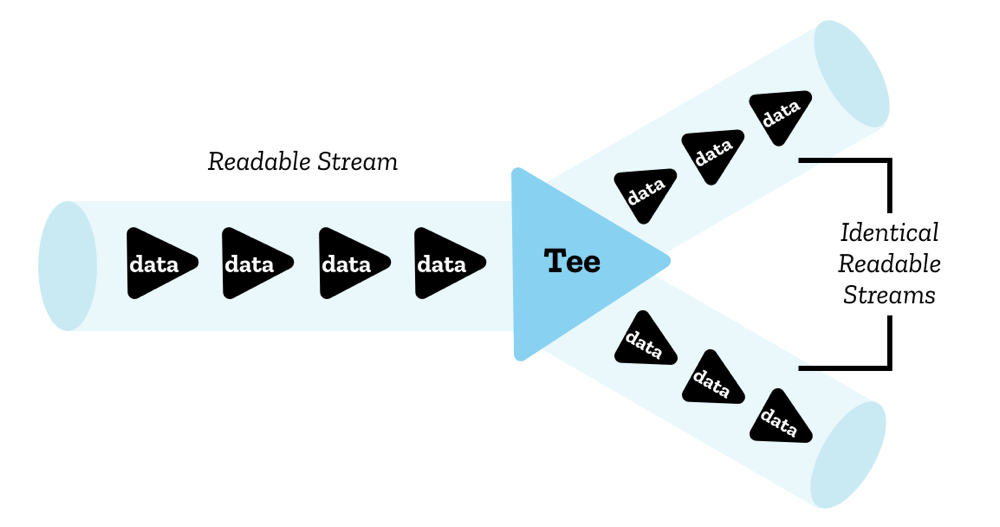
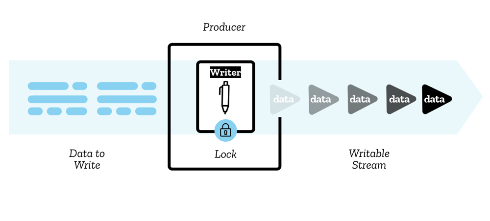
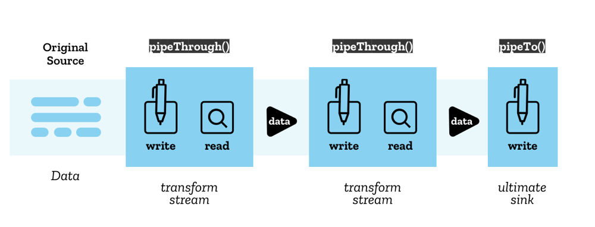
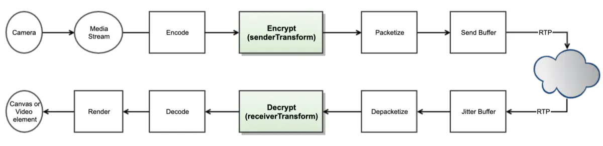

Insertable Stream
Abstract |
WebRTC Insertable Stream |
Authors |
Walter Fan |
Status |
WIP |
Updated |
2026-03-05 |
概述
Insertable Stream 可插入的流是新的 WebRTC API, 可用来操作通过 RTCPeerConnection 传送的 MediaStreamTracks 中的每一个字节。它让上层应用能对 WebRTC 底层媒体进行访问，让以往 WebRTC 应用中许多不可能做的情况都成为可能了
比如替换视频聊天时的背景，实时进行音视频处理（降噪，美颜，打水印，加特效等）
所解决的问题
我们需要 WebRTC 提供 API
允许用户指定的处理，而不仅仅只能通过浏览器
允许浏览器处理由用户处理过的数据，就好像它是通过正常的处理管道一样
允许使用 WASM 等技术实现更有效的媒体处理
允许使用像 Workers 这样的技术来避免主线程阻塞
不会对当前通信的安全或隐私产生负面影响
Stream API
Streams 标准提供了一组通用的 API，用于创建此类流数据并与之交互，这些数据体现在可读流、可写流和转换流中。
readable streams
writable streams
transform streams
这些 API 旨在更有效地映射到低级的 I/O 原始操作，包括在适当的情况下对字节流进行专门的处理。
它们允许将多个流轻松组合到管道链中，或者可以通过读取器和写入器直接使用。 最后，它们被设计为自动提供背压和排队。
阅读 Streams API Concepts 来了解背后的基本概念
用例
视频特效: 传入一个视频流 ，通过 transform stream 来实时地应用特效
解压： 传入一个文件流，通过 transform stream 有选择地从压缩包中解压文件，当用户滚动浏览图库时将它们转换为 img 元素。
图像解码：传入一个 HTTP 响应流，通过 transform stream 将字节流解码为 bitmap，再接一个 transform stream 将 bitmap 转换为 png
模型
一个数据块，称之为 chunk，它是从一个流中读入或写出的一个数据片段，它可以是任意类型，一个流甚至可以包含不同类型的 chunk
对于给定的流，chunk 通常不是最原子的数据单元； 例如，字节流可能包含由 16 KiB Uint8Array 组成的块，而不是单个字节。
可读流 ReadableStream
readable stream 是在 JavaScript 中由来自底层的 ReadableStream 对象表示的数据源——这是网络上或者本地某个地方的资源，可以从中获取数据。

有两种类型的底层数据源：
推送源 Push sources，它在您访问它时不断向您推送数据，可以开始、暂停或取消对流的访问，例如视频流和 TCP/Web 套接字中的数据流。
拉取源 Pull sources： 它要求您在连接后明确向它们请求数据，例如通过过 Fetch 或 XHR 调用进行的文件访问操作.
ReadableStream 代码示例：
const stream = new ReadableStream({
start(controller) {
},
pull(controller) {
},
cancel() {
},
type,
autoAllocateChunkSize
},
{
highWaterMark,
size()
}
);
可写流 WritableStream
可写流是您可以写入数据的目的地，在 JavaScript 中由 WritableStream 对象表示。 它用作对于底层接收器之上的抽象，一个可写入原始数据的底层的 I/O sink。

WritableStream 代码示例：
const stream = new WritableStream({
start(controller) {
},
write(chunk,controller) {
},
close(controller) {
},
abort(reason) {
}
},
{
highWaterMark,
size()
}
);
管道链 Pipe chains
Stream API 可以用一个称为 pipe chain 的结构将这些流一个一个串起来，具体方法有 pipeThrough 和 pipeTo

可插入流 Insertable Streams API
可插入流其实指的是一种转换流，它意为可以在媒体流的处理过程中插入一些处理逻辑。 它可使用 RTCRtpSender 和 RTCRtpReceiver 上附加的 API 来将处理代码插入媒体流的处理管道。
// New dictionary
dictionary RTCInsertableStreams {
ReadableStream readable;
WritableStream writable;
};
typedef (SFrameTransform or RTCRtpScriptTransform) RTCRtpTransform;
// New methods for RTCRtpSender and RTCRtpReceiver
partial interface RTCRtpSender {
attribute RTCRtpTransform? transform;
};
partial interface RTCRtpReceiver {
attribute RTCRtpTransform? transform;
};
由上面的定义可知，可插入流通过转换器 RTCRtpTransform 来实现，有两种转换器
SFrameTransform: 主要用来加解密， S 是 Secure 的首字母
RTCRtpScriptTransform：指对一般的 audio/video 帧的转换
SFrameTransform
接口定义如下
enum SFrameTransformRole {
"encrypt",
"decrypt"
};
dictionary SFrameTransformOptions {
SFrameTransformRole role = "encrypt";
};
typedef [EnforceRange] unsigned long long SmallCryptoKeyID;
typedef (SmallCryptoKeyID or bigint) CryptoKeyID;
[Exposed=(Window,DedicatedWorker)]
interface SFrameTransform {
constructor(optional SFrameTransformOptions options = {});
Promise<undefined> setEncryptionKey(CryptoKey key, optional CryptoKeyID keyID);
attribute EventHandler onerror;
};
SFrameTransform includes GenericTransformStream;
enum SFrameTransformErrorEventType {
"authentication",
"keyID",
"syntax"
};
[Exposed=(Window,DedicatedWorker)]
interface SFrameTransformErrorEvent : Event {
constructor(DOMString type, SFrameTransformErrorEventInit eventInitDict);
readonly attribute SFrameTransformErrorEventType errorType;
readonly attribute CryptoKeyID? keyID;
readonly attribute any frame;
};
dictionary SFrameTransformErrorEventInit : EventInit {
required SFrameTransformErrorEventType errorType;
required any frame;
CryptoKeyID? keyID;
};
RTCRtpScriptTransform
接口定义如下
// 定义视频帧的类型，最终会由 WebCodecs 标准来定义
enum RTCEncodedVideoFrameType {
"empty",
"key",
"delta",
};
dictionary RTCEncodedVideoFrameMetadata {
long long frameId;
sequence<long long> dependencies;
unsigned short width;
unsigned short height;
long spatialIndex;
long temporalIndex;
long synchronizationSource;
sequence<long> contributingSources;
};
//定义编码过的 video 和 audio 帧. 最终会由 WebCodecs 标准来定义.
[Exposed=(Window,DedicatedWorker)]
interface RTCEncodedVideoFrame {
readonly attribute RTCEncodedVideoFrameType type;
readonly attribute unsigned long long timestamp;
attribute ArrayBuffer data;
RTCEncodedVideoFrameMetadata getMetadata();
};
//音频帧的元数据，包含RTP中定义的 SSRC, CSRC
dictionary RTCEncodedAudioFrameMetadata {
long synchronizationSource;
sequence<long> contributingSources;
};
[Exposed=(Window,DedicatedWorker)]
interface RTCEncodedAudioFrame {
readonly attribute unsigned long long timestamp;
attribute ArrayBuffer data;
RTCEncodedAudioFrameMetadata getMetadata();
};
// 定义 JavaScript-based transforms.
[Exposed=DedicatedWorker]
interface RTCTransformEvent : Event {
readonly attribute RTCRtpScriptTransformer transformer;
};
partial interface DedicatedWorkerGlobalScope {
attribute EventHandler onrtctransform;
};
[Exposed=DedicatedWorker]
interface RTCRtpScriptTransformer {
readonly attribute ReadableStream readable;
readonly attribute WritableStream writable;
readonly attribute any options;
};
[Exposed=Window]
interface RTCRtpScriptTransform {
constructor(Worker worker, optional any options, optional sequence<object> transfer);
};
案例
通过 WebRTC Insertable Streams 实现的真正的端到端加密
搭建一个本地的 peer connection, video1 元素放置本地获取的 stream, video2 元素放置从远程获取的 stream
这里也放置了一个 videoMonitor 元素来模拟为中间人 middlebox, 它从 peer connection 中拿到媒体流，不经 decode 而直接播放。
大致流程为:
localStream(video1) --> 加密 --> peerConnection --> 解密 --> video2(remoteStream)
|
v
videoMonitor(未解密的)
从 RTCPeerConnection 中获取 RTCRtpSender 和 RTCRtpReceiver
explain: https://webrtchacks.com/true-end-to-end-encryption-with-webrtc-insertable-streams/
codes: https://github.com/webrtc/samples/tree/gh-pages/src/content/insertable-streams/endtoend-encryption

下面的代码演示如何在原本发送到远端的视频流，RTCRtpSender 中的数据流是
readableStream --> writableStream
现在在中间插入一个转换流
readableStream --> senderTransformStream -> writableStream
代码示例：
const sender = pc1.addTrack(stream.getVideoTracks()[0], stream);
const senderStreams = sender.createEncodedVideoStreams() :
const senderTransformStream = new TransformStream({
transform: (chunk, controller) {
//这里可以做加密
console.log(chunk, chunk.data.byteLength);
controller.enqueue(chunk);
}
});
senderStreams.readableStream
.pipeThrough(senderTransformStream)
.pipeTo(senderStreams.writableStream);
完整代码参见 WebRTC example: https://webrtc.github.io/samples/src/content/insertable-streams/endtoend-encryption/
转换流的实现是在一个 web worker 中实现的，主线程与 worker 线程通过消息来通信
const worker = new Worker('./js/worker.js', {name: 'E2EE worker'});
function setupSenderTransform(sender) {
const senderStreams = sender.createEncodedStreams();
const {readable, writable} = senderStreams;
worker.postMessage({
operation: 'encode',
readable,
writable,
}, [readable, writable]);
}
function setupReceiverTransform(receiver) {
const receiverStreams = receiver.createEncodedStreams();
const {readable, writable} = receiverStreams;
worker.postMessage({
operation: 'decode',
readable,
writable,
}, [readable, writable]);
}
}
在 worker 中
对于 encode 消息的处理就是插入一个用来加密的 transformStream（处理函数为 encodeFunction）
对于 decode 消息的处理就是插入一个用来解密的 transformStream（处理函数为 decodeFunction）
onmessage = async (event) => {
const {operation} = event.data;
if (operation === 'encode') {
const {readable, writable} = event.data;
const transformStream = new TransformStream({
transform: encodeFunction,
});
//处理管道经由 transformStream 的 encodeFunction 做 encode
readable
.pipeThrough(transformStream)
.pipeTo(writable);
} else if (operation === 'decode') {
const {readable, writable} = event.data;
const transformStream = new TransformStream({
transform: decodeFunction,
});
//处理管道经由 transformStream 的 decodeFunction 做 decode
readable
.pipeThrough(transformStream)
.pipeTo(writable);
} else if (operation === 'setCryptoKey') {
if (event.data.currentCryptoKey !== currentCryptoKey) {
currentKeyIdentifier++;
}
currentCryptoKey = event.data.currentCryptoKey;
useCryptoOffset = event.data.useCryptoOffset;
}
};
encodeFunction 的实现如下，主要是把视频帧中的数据取出，将视频数据与加密 key 进行异或, 做一个简单的加密，然后再加入 key 的标识和校验和 (checksum), 再把处理过的数据写回 encodedFrame.data。最后，将 encodedFrame 追加到 controller 的队列末尾。
function encodeFunction(encodedFrame, controller) {
if (scount++ < 30) { // dump the first 30 packets.
dump(encodedFrame, 'send');
}
if (currentCryptoKey) {
const view = new DataView(encodedFrame.data);
// Any length that is needed can be used for the new buffer.
const newData = new ArrayBuffer(encodedFrame.data.byteLength + 5);
const newView = new DataView(newData);
const cryptoOffset = useCryptoOffset? frameTypeToCryptoOffset[encodedFrame.type] : 0;
for (let i = 0; i < cryptoOffset && i < encodedFrame.data.byteLength; ++i) {
newView.setInt8(i, view.getInt8(i));
}
// This is a bitwise xor of the key with the payload. This is not strong encryption, just a demo.
for (let i = cryptoOffset; i < encodedFrame.data.byteLength; ++i) {
const keyByte = currentCryptoKey.charCodeAt(i % currentCryptoKey.length);
newView.setInt8(i, view.getInt8(i) ^ keyByte);
}
// Append keyIdentifier.
newView.setUint8(encodedFrame.data.byteLength, currentKeyIdentifier % 0xff);
// Append checksum
newView.setUint32(encodedFrame.data.byteLength + 1, 0xDEADBEEF);
encodedFrame.data = newData;
}
controller.enqueue(encodedFrame);
}
decodeFunction
decodeFunction 的实现如下，主要是把视频帧中的数据取出，先检查校验和(checksum), 再检查加密 key 的标识，如果都没问题就用加密 key 与视频数据进行再次异或来实现简单的解密，最后，将 decodedFrame 追加到 controller 的队列末尾。
function decodeFunction(encodedFrame, controller) {
if (rcount++ < 30) { // dump the first 30 packets
dump(encodedFrame, 'recv');
}
const view = new DataView(encodedFrame.data);
const checksum = encodedFrame.data.byteLength > 4 ? view.getUint32(encodedFrame.data.byteLength - 4) : false;
if (currentCryptoKey) {
if (checksum !== 0xDEADBEEF) {
console.log('Corrupted frame received, checksum ' + checksum.toString(16));
return; // 这可能是加密 key 设定了，但是收到了未加密的视频帧
}
const keyIdentifier = view.getUint8(encodedFrame.data.byteLength - 5);
if (keyIdentifier !== currentKeyIdentifier) {
// 这是加密 key 和解密的 key 不一致
console.log(`Key identifier mismatch, got ${keyIdentifier} expected ${currentKeyIdentifier}.`);
return;
}
const newData = new ArrayBuffer(encodedFrame.data.byteLength - 5);
const newView = new DataView(newData);
const cryptoOffset = useCryptoOffset? frameTypeToCryptoOffset[encodedFrame.type] : 0;
for (let i = 0; i < cryptoOffset; ++i) {
newView.setInt8(i, view.getInt8(i));
}
for (let i = cryptoOffset; i < encodedFrame.data.byteLength - 5; ++i) {
const keyByte = currentCryptoKey.charCodeAt(i % currentCryptoKey.length);
newView.setInt8(i, view.getInt8(i) ^ keyByte);
}
encodedFrame.data = newData;
} else if (checksum === 0xDEADBEEF) {
return; // encrypted in-flight frame but we already forgot about the key.
}
controller.enqueue(encodedFrame);
}
至此，无论是采用 P2P 还是 SFU, 都不怕再有“中间人攻击”，只有通信的双方共享一个加密 key , 他们之间才能看到彼此正常的视频。在实际应用了，加密 key 的管理会更复杂，还需要加盐，加密算法多半会用 AES。